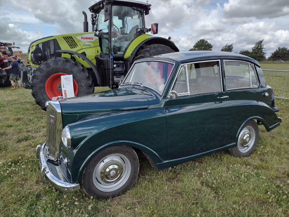

<link href="{{ site.baseurl }}/events/article.css" rel="stylesheet" type="text/css">
<main>
    <article>
        <ol id="breadcrumb">
            <li>
                <a href="{{ site.baseurl }}/">Home</a>
            </li>
            <li>
                <a href="{{ site.baseurl }}/events">Events</a>
            </li>
            <li>
                <a href="{{ site.baseurl }}/events/local">Local</a>
            </li>
            <li>Leicestershire County Show 2022</li>
        </ol>
        <div id="content">
            <h1>Leicestershire County Show, Market Harborough</h1>
            <h2>3<sup>rd</sup> July 2022</h2>
            
            <p>Paul Burgess’s (NKA 947) Mayflower at the Leicestershire County Show in Market Harborough on 3<sup>rd</sup> July 2022.</p>
            <p>Paul writes: <em>“I have attached a pic of my car at the Leics County Show. I felt a bit lonely as I was the only classic that turned-up! No awards, unfortunately, or I would have won the lot.”</em></p>
        </div>
    </article>
    <aside>
        <h2>Members’ cars in attendance</h2>
        <ul class="disableListStyles">
            <li>
                <h3>Paul Burgess</h3>
                <div>
                    <div class="numberPlateMarker">NKA 947</div>
                </div>
            </li>
        </ul>
    </aside>
</main>
